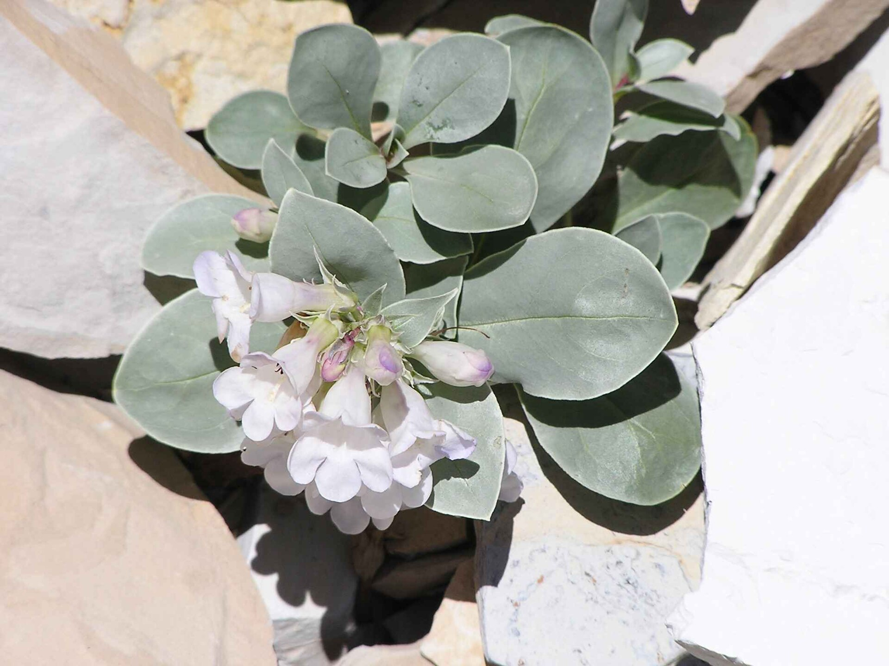

ふらっと立ち寄って、ゆっくり一息つけました。居心地がよくて、気づけば長居していました。
口コミ
基地で過ごす時間の、イメージです。

以下は業種のイメージに基づく創作例で、実際のお客様の声ではありません。
香りのいいコーヒーで、午後の気分がほどけました。一人でも入りやすい雰囲気です。
やさしい雰囲気の中で、友人とのおしゃべりが弾みました。また来たいです。
実際の口コミは、InstagramやGoogleマップでご確認ください。
基地で過ごす時間の、イメージです。

以下は業種のイメージに基づく創作例で、実際のお客様の声ではありません。
ふらっと立ち寄って、ゆっくり一息つけました。居心地がよくて、気づけば長居していました。
香りのいいコーヒーで、午後の気分がほどけました。一人でも入りやすい雰囲気です。
やさしい雰囲気の中で、友人とのおしゃべりが弾みました。また来たいです。
実際の口コミは、InstagramやGoogleマップでご確認ください。
掲載写真はイメージ素材です。実際の店舗の様子とは異なる場合があります。